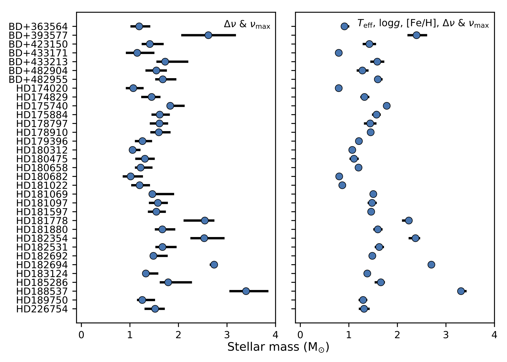
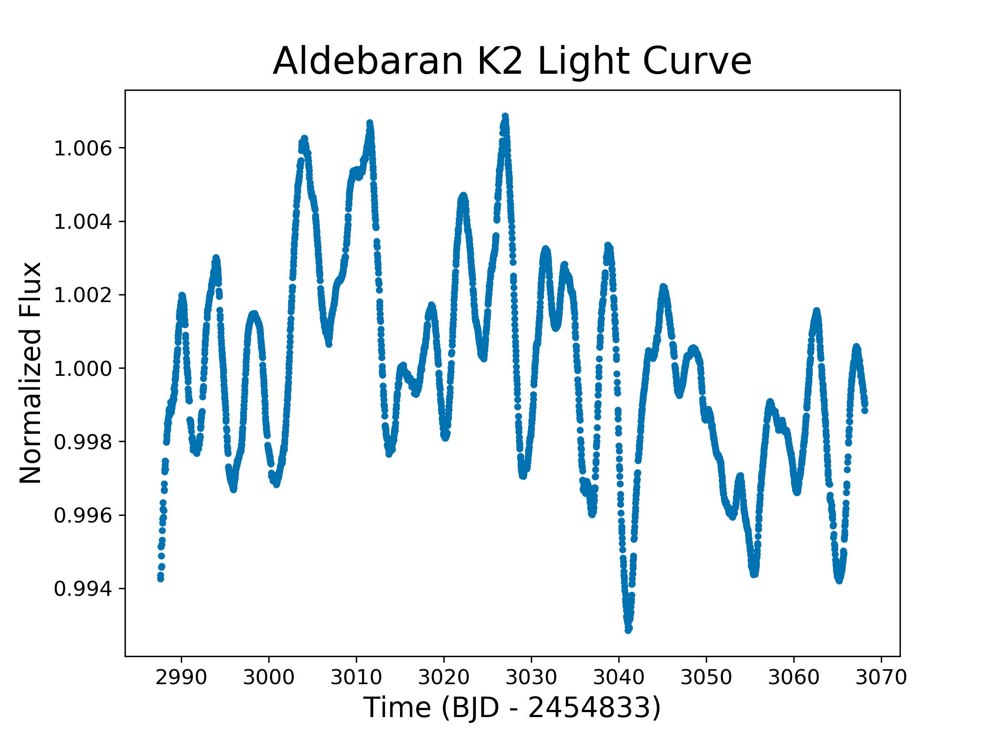

Naked-Eye Stars in Kepler and K2
Benjamin Pope
NASA Sagan Fellow, NYU
benjaminpope.github.io/talks/kepscicon/kepscicon
K2 Photometry
but the pixels have different gains ("inter- and intra-pixel sensitivity variation")...
and the pixel window doesn't necessarily track the whole PSF perfectly ("aperture losses").
CCD Smear
To calibrate this 'smear' the Kepler detectors have two smear registers not exposed to light

102 KIC targets with Kp < 9 were untargeted or significantly undertargeted during Kepler - mostly giants and hot stars.

The smear data give you a 1D projection of flux in the whole module - including untargeted bright stars

We find no transiting planets, but detect one new eclipsing binary
We detect solar-like oscillations in 34 red giants
We detect classical variability in 26 BAF stars...
including five 'hump and spike' Rossby mode detections
With TRES spectra from Latham and Bieryla & asteroseismic constraints we measure abundances for the giants

Using the asteroseismology and spectroscopy we measure the giants' masses
This new sample of asteroseismic + spectroscopic benchmark stars doubles those available from the Gaia-ESO survey
All Kepler Smear Campaign data are available online at github.com/benjaminpope/smearcampaign
Halo Photometry
What if we just look at unsaturated pixels?
Thanks to DDT time and GO programs, we have apertures to cover the unsaturated 'halo'!
Flux \(f_i \) at cadence i is a sum over j pixels \(p_{ij}\) with weights \(w_j\):
\[
f_i \equiv \sum\limits_i w_j p_{ij}
\]
To find the appropriate weights, we instead minimize the Total Variation \[\begin{align} TV \equiv \dfrac{\sum_i |f_i - f_{i-1}|} {\sum_i f_i } \end{align} \]
All K2 Halo data are available online at github.com/benjaminpope/k2halo
Pleiades
Πλειάδες, the Seven Sisters
Alcyone, Atlas (dad), Electra, Maia, Merope, Taygeta, Pleione (mum)

Atlas lightcurve: raw (top) and halo (bottom)
Lightcurves of All Seven Bright Pleiades
Aldebaran
α Tauri
الدبران ,the follower
... follows the Pleiades!
Detection of p-mode oscillations at 2.2 μHz
Without this asteroseismology, we have
\[M = 1.27^{+0.24}_{-0.20} \, \mathrm{M_{\odot}}\]
and age \(4.9^{+3.6}_{-2.0} \, \rm Gyr \)
With this new constraint, we have
\[M = 1.16^{+0.07}_{-0.07} \, \mathrm{M_{\odot}}\]
and age \(6.4^{+1.4}_{-1.1} \, \rm Gyr \)
Using MESA models, we find that on the main sequence Aldebaran b had a semi-major axis of \(1.50 \pm 0.03 \) AU and Aldebaran had a luminosity \(2.0 \pm 0.7 \, L_\odot \)...
so Aldebaran b had an insolation comparable to Earth when its star was on the main sequence.
Data Releases
All Kepler Smear Campaign data are available online at github.com/benjaminpope/smearcampaign
K2 Halo Campaign data are available online at github.com/benjaminpope/k2halo
See Arentoft's paper on ε Tau, Buysschaert's on ι Lib, and Bowman's talk up next on ρ Leonis
Posters by Buzasi (Spica) and Greklek-McKeon (classifications)
More to come!